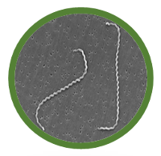

Módulo 1 O que é Leptospirose?
A leptospirose
Seja bem-vindo ao primeiro módulo do curso, no qual apresentaremos os conceitos básicos e determinantes da leptospirose, abordando suas causas e características.
Ao final desse módulo, esperamos que você seja capaz de:
- Evidenciar o conceito de leptospirose.
- Correlacionar os desastres climáticos e a leptospirose.
- Descrever como ocorre a transmissão da doença.
No Brasil, a leptospirose é uma doença endêmica, mas se torna epidêmica em períodos chuvosos, especialmente nas capitais e áreas metropolitanas, devido às enchentes em conjunto com a elevada densidade populacional em áreas socialmente vulneráveis, às condições inadequadas de saneamento e à alta exposição de roedores infectados.
A infecção em humanos pode ocorrer de duas maneiras principais:
A bactéria Leptospira spp., agente etiológico da leptospirose:
As bactérias do gênero Leptospira são espiroquetas que em uma forma em espiral longa, fina (0.1 a 0.2 µm de diâmetro e 6-20 µm de comprimento) e flexível, sendo altamente móveis e apresentando uma ou ambas as extremidades em forma de gancho (Adler, 2010). Possuem uma estrutura de dupla membrana, na qual a membrana citoplasmática e a parede de peptideoglicano estão intimamente associadas e envolvidas pela membrana externa. Nesta estrutura, o Lipopolissacarídeo (LPS) constitui o principal antígeno da Leptospira. São bactérias aeróbias obrigatórias, que compreendem 20 espécies diferentes, divididas entre patogênicas (encontradas principalmente em reservatórios animais e associadas a infecções em seres humanos), saprofíticas (encontradas continuamente no ambiente em corpos d’água e sem associação a infecções em seres humanos) e intermediárias (encontradas no ambiente e ocasionalmente associadas a infecções em seres humanos). Leptospiras são ainda divididas em sorogrupos e sorovares, classificações baseadas em sua semelhança antigênica, com mais de 200 sorovares descritos até o momento.
Algumas atividades favorecem o contato com essas bactérias, como aquelas desempenhadas por profissionais que trabalham em áreas com exposição a esgoto, lixo e águas residuais ou com atuação direta em cenários associados a grandes chuvas, como bombeiros, equipes de resgate e pessoas que nadam em águas contaminadas ou entram em contato com lama durante operações de limpeza pós-enchente.
Dados do Ministério da Saúde mostram que, no Brasil, no período de 2007 a 2021, foram registrados 52.399 casos confirmados de leptospirose humana e 4.721 óbitos, sendo notificada a maior incidência da doença nas regiões Sul e Sudeste (Brasil, 2022).